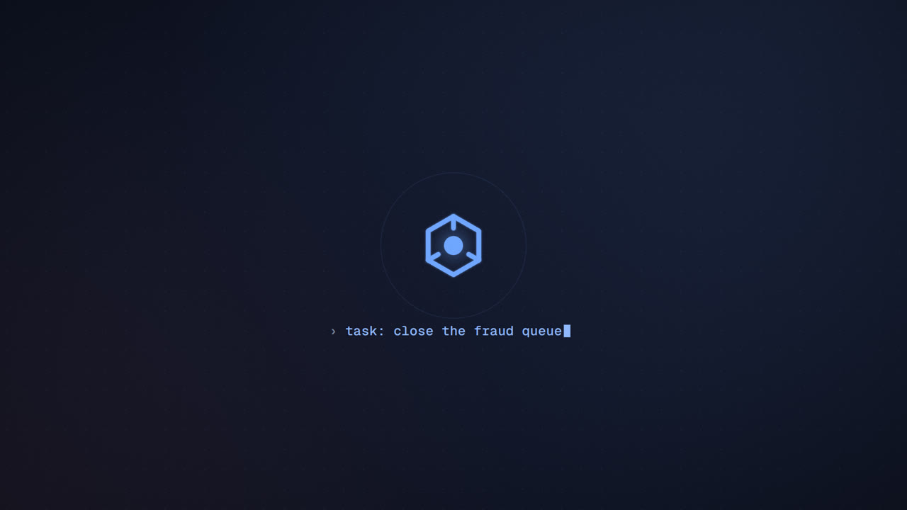
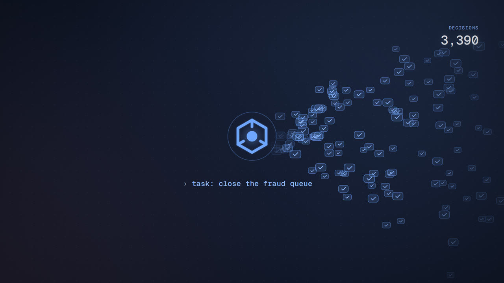
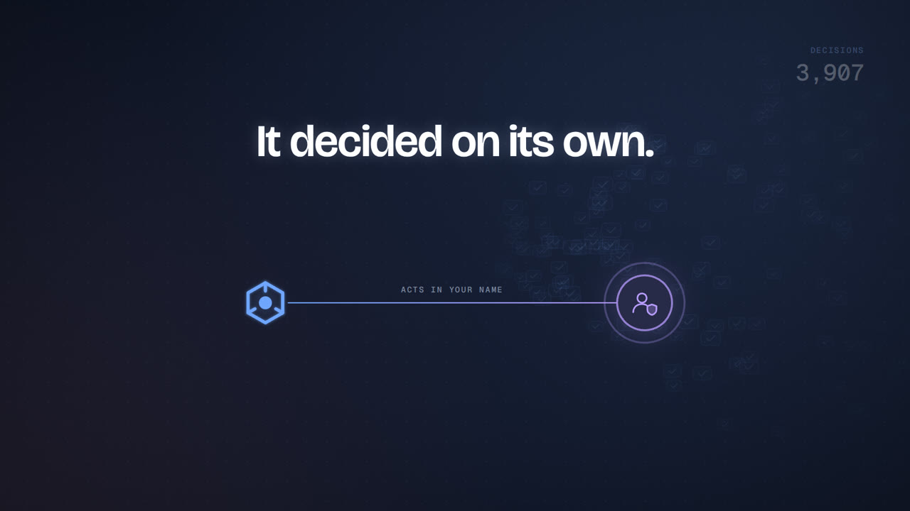
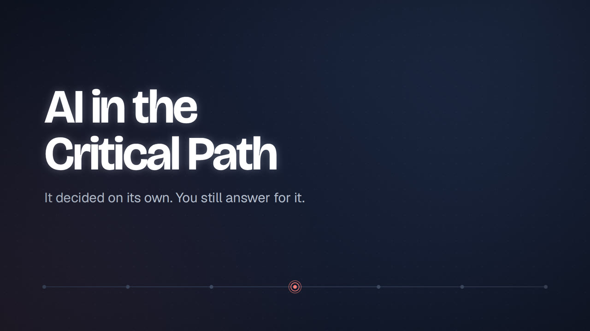
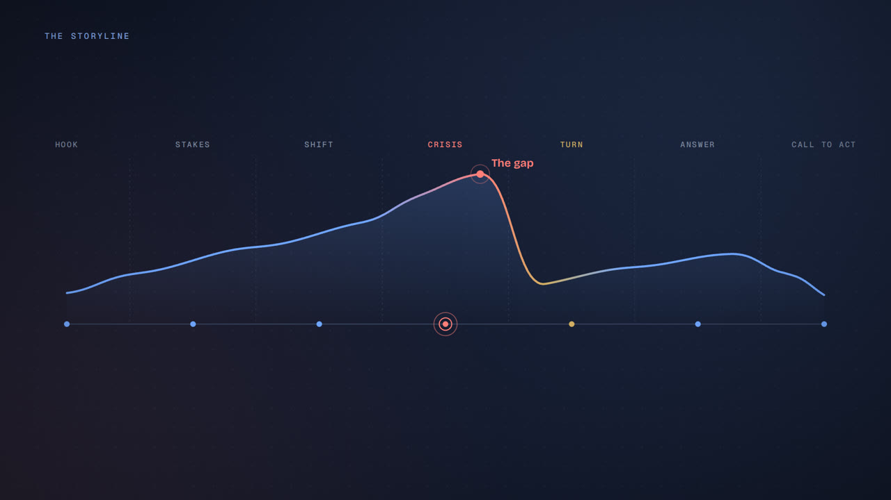
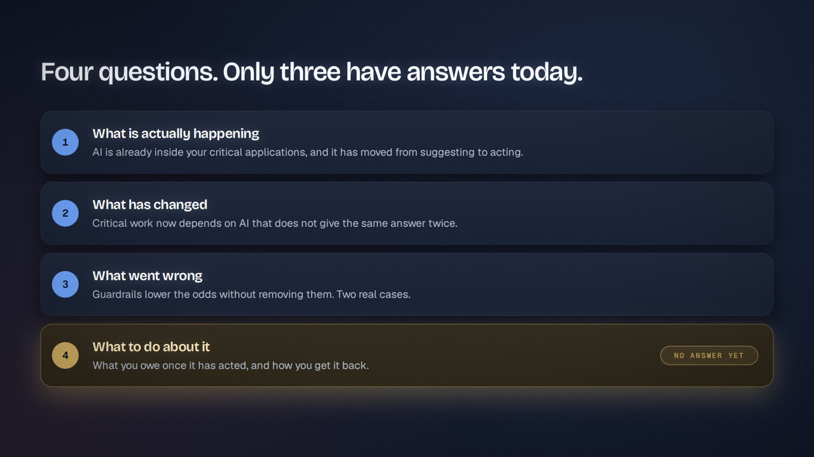
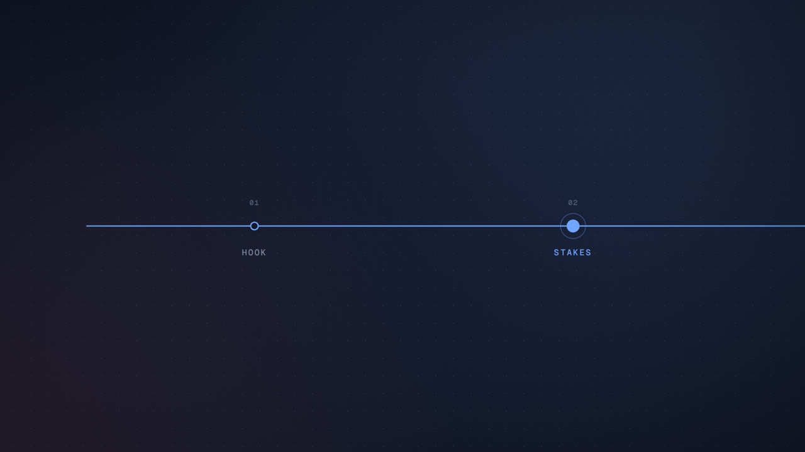

The deck argues one thing: AI has moved from suggesting to acting inside critical processes. When it acts wrongly, nothing in continuity practice tells you how to get back. The video turns the deck's own motif, the critical path (the seven-node line on the cover, with the red node in the middle), into a literal spine. The whole film lives on one line that runs through seven nodes: Hook → Stakes → Shift → Crisis → Turn → Answer → Call to act. The agent (the hexagon glyph from the deck's cast) travels along that line. At the Crisis node the path breaks. The rest of the film is about rebuilding the path, and in S21 the six recovery steps literally become the new segment that bridges the gap. The ending returns to the opening image: an agent, a person, and a thin line between them that says acts in your name.
The deck is built for a presenter. The video has no presenter and no voice-over, so on-screen text carries the argument, and all text is timed for reading (see §6). Scene lengths are snapped to musical bars, so a voice-over can be added later without re-timing.
39 seconds from the real renderer and synth: every frame was drawn by the WebGL pipeline and exported one by one, and the audio is the prototype score plus the scene's SFX cues. It ends with the first path-travel transition into a placeholder for S04. Turn the sound on.







| Decision | Value | Why |
|---|---|---|
| Resolution | 1920×1080 (16:9) | Standard delivery. The design grid is the deck's 1280×720 scaled ×1.5, so every deck measurement carries over directly. |
| Frame rate | 30 fps | Motion is typographic and graphic, so 60 fps gains little and doubles render time. The engine is fps-agnostic, so a 60 fps render is one constant. |
| Tempo | 90 BPM, 4/4 | At 30 fps one beat is exactly 20 frames and one bar is 80 frames (2.667 s). Every scene boundary and every animation cue lands on a whole frame on the musical grid. |
| Runtime | 128 bars ≈ 5:41 (full cut) | See §5 for a ~4:40 short cut. |
| Safe area | 96 px sides, 72 px top/bottom (title-safe 5%) |
| Token | Hex | Role |
|---|---|---|
stage |
#05080E |
Letterbox and deepest black |
bg |
#101729 |
Scene background |
s1 / s2 |
#161F33 / #1B2742 |
Cards / tinted cards |
acc / acc2 |
#6FA6FF / #8FB9FF |
The agent, structure, "working as designed" |
al / al2 / alTx |
#FF7F79 / #2F1B26 / #FFC4C0 |
Warm = wrong. Rogue agent, failures, the gap |
gold |
#D0AE62 |
The turn. Used only for the Turn, the open fourth question, and the call to act |
lav |
#B79CFF |
You (the accountable person) |
tx / tx2 / mut |
#EDF1F7 / #B2BCCB / #7D8AA0 |
Text hierarchy |
Colour is semantic and never decorative: blue means system behaving, coral means system acting wrongly or consequence, gold means where we turn, lavender means you.
assets/fonts/, SIL OFL) so renders are offline and deterministic.| Actor | Glyph | Colour |
|---|---|---|
| The agent | Hexagon with a nucleus and three spokes | blue; coral when rogue |
| The person in the loop | Head and shoulders | #DCE4EF |
| You | Person with a shield | lavender |
| Board and regulator | Portico / columns | gold |
| The supplier | Isometric box | #9DAAC0 |
bg, a dot grid at 42 px pitch (6% blue) that drifts slowly (6 px/s parallax), and two soft radial glows: blue at the top right and coral at the bottom left. Their strength follows the tension curve (§1.7).PART 2 · WHAT HAS CHANGED.| Name | Spec | Used for |
|---|---|---|
rise |
opacity 0→1, y +24→0 px, 0.8 s, ease cubic-bezier(.16,.84,.24,1) (the deck's ease) |
default entrance |
fromL / fromR |
x ∓84/96 px → 0, same ease | panels that arrive "beside" something |
pop |
scale .55 → 1.08 → 1, 0.6 s | numbers, nodes, avatars |
draw |
stroke-dash 0 → 1, 0.9 s, ease-in-out | arrows, paths, rails |
grow |
scaleX 0 → 1 from the left edge, 1.2 s | bars, meters |
count |
number tween, ease-out quart, tick SFX on each integer (capped at 12/s) | stats |
type |
mono text typed at 28 chars/s with a caret | system/agent "voice" |
dim |
fade to 36% plus desaturation, 0.9 s | "already answered" |
dissolve |
shape breaks into 60–120 seeded particles that drift up and fade over 1.2 s | the person leaving the loop |
| Stagger | 3 beats (≈ 0.67 s) between sibling items unless noted | |
| Exit | the outgoing scene's content falls 12 px and fades over the last half-beat | T2 |
| Hold | every scene holds its finished state for at least 1 bar before exiting |
tension 1.0 | ▲ S15 (the gap)
| ____/ |
0.7 | _____/ |
0.5 | ________/ | ______
0.3 | _______/ |_____/ \____
0.1 |_____/ TURN END
Hook Stakes Shift Crisis Answer Call
Keyframes (scene start → value): S01 .10 · S04 .25 · S08 .45 · S11 .65 · S12 .80 · S15 1.0 · S16 .15 · S17 .30 · S21 .40 · S22 .25 · S25 .05.
The scene is drawn with Canvas 2D into an offscreen canvas and uploaded each frame as a texture into a WebGL 2 pipeline:
0.30 + 0.35 × tension.al2 in the shadows as tension rises, and a gold wash pulse at the Turn.| Code | Name | What happens | Sound |
|---|---|---|---|
| T1 | Path travel | The camera pulls back (zoom 1 → 0.55) to reveal the big critical path, glides to the next act's node and pushes in. The outgoing scene shrinks into its node. 1 bar. | whoosh + chord change on the downbeat |
| T2 | Beat cut | The outgoing content exits (fall and fade, staggered), and the new build starts on the next downbeat. ½ beat. | soft tick |
| T3 | Morph | A shared element survives the cut and moves or rescales to its new place (the agent hex, the four-bar map, the person avatar). | "draw" swell |
| T4 | Glitch cut | Crisis only: 4 frames of shader glitch, then a hard cut. | glitch burst |
| T5 | Blackout | The Turn: everything fades to near-black and the music drops out for one bar. | silence, then a bell |
All audio is synthesized from code (Web Audio OfflineAudioContext, seeded RNG). No samples are used. The same timeline.js that drives the picture also drives the music: every visual cue can carry an sfx tag, and the music reads the tension curve and the scene/act list. Picture and sound therefore cannot drift out of sync, and changing a scene length automatically re-times the score.
| Act | Progression | Character |
|---|---|---|
| Hook (S01–S03) | Dm(add9) · B♭maj7 | suspended, curious |
| Stakes (S04–S07) | Dm · B♭ · F · C | steady, informative |
| Shift (S08–S10) | Dm · B♭ · Gm · A | the V chord adds pull |
| Crisis (S11–S15) | Dm · E♭ · Dm · C♯dim | Phrygian ♭II, unstable |
| Turn (S16) | 1 bar silence → Fmaj7(9) | air, then light |
| Answer (S17–S21) | B♭ · F · C · Dm | rebuilding |
| Call to act (S22–S25) | B♭ · C · Dm · D (major, final) | resolve |
| Tag | Recipe | Typical use |
|---|---|---|
tick |
2 ms click through a 4 kHz band-pass, −28 dB | text lines and small items landing |
pop |
sine 880 → 440 Hz in 90 ms, tiny noise transient | cards, numbers, nodes |
draw |
sine glide 300 → 600 Hz under a soft noise bed, length = the draw | lines and arrows drawing |
whoosh |
pink noise, band-pass swept 300 Hz → 4 kHz → 800 Hz, stereo pan L→R | T1 camera moves |
count |
pitched ticks rising a semitone every 4th tick | counters |
same |
a clean marimba-like tone, identical pitch each time | S08 left side: A, A, A |
differ |
the same tone at a different pitch each time, plus a bit-crush tail | S08 right side: A, B, C |
dissolve |
reversed shimmer (granular noise plus a high sine cluster), fading | the person disappears |
glitch |
a 60–120 ms bit-crushed square burst with a sample-rate crush | Crisis cuts, rogue agent |
alarm |
a muted two-tone (A5/F5) ×2 | S10 normal outage alarm |
impact |
sine 60 → 30 Hz plus a noise burst plus reverb | July reveal, "84 days", the path breaking |
riser |
noise plus a sine rising two octaves over N bars | into Crisis, into the gap |
bell |
3-operator FM bell, gold | the Turn, the "12%", the path mending |
heart |
shared with the heartbeat stem |
Mix: music bus −18 LUFS-ish, SFX sit 4–6 dB over it, and music is side-chain ducked 3 dB under SFX. The master goes through a gentle compressor and a −1 dBTP limiter. Output is 48 kHz stereo, muxed to AAC 192 kbps.
Timing notation: @b is the beat within the scene (1 beat = 20 frames = 0.667 s). bars is the scene length. → sfx marks a sound cue.
Purpose: state the whole film in two lines before any structure appears.
@0 Pure stage black. Low pad fades in over 2 bars.@1 A single blue point appears at the centre and breathes (scale 1 ↔ 1.3, 1.5 s).@3 The point draws itself into the agent hexagon (stroke draw, 1.2 s), and its nucleus lights up. → draw@5 The dot grid fades up behind it, radiating from the centre over 1 bar.@6 Mono text, typed under the hex: task: close the fraud queue → tick per word.@8 The agent acts: small blue "decision" chips (✓) stream out to the right in a fan, faster and faster. A mono counter in the corner reads decisions: 1 … 214 … 3,907. → count (thinning out)@12 Everything freezes. The counter and chips fade back to about 10%. The display headline rises in the upper third: "It decided on its own." → pop (soft)@15 At the far right, the You avatar (lavender, shield) fades in. A thin line draws from the agent to You, labelled in mono ACTS IN YOUR NAME. → draw@17 Second line under the first, in tx2: "You still answer for it." The word You is lavender.@18–19 Hold.@0 The camera eases back (zoom 1.0 → 0.85). The agent–You line is now the full-width critical path at y = 780 with 7 nodes spaced evenly. The nodes pop left to right, 1 per ⅓ beat. The middle node is coral with a pulsing ring (the deck's peak-ring). → 7 × pop rising in pitch (the motif D–F–A–G is played by these pops on bells)@3 Title rises: AI in the Critical Path (Bricolage 700, 156 px, white, 2 lines). → whoosh (soft)@6 Subtitle fades in (Geist 400, 42 px, tx2): It decided on its own. You still answer for it.@9 Credits (mono, mut): SV Saúl Varela · WM Facilitated by Wasim Malik, Risk Professionals, with round monogram badges as in the deck.@12–15 Hold. The coral ring keeps pulsing.Purpose: show the structure once, so the returning map in S16 pays it off.
@0 The path rises to y = 700 and the nodes take their act colours. Above, mono labels fade in one by one: HOOK · STAKES · SHIFT · CRISIS · TURN · ANSWER · CALL TO ACT (CRISIS coral, TURN gold). → tick ×7@3 The story arc draws across above the path with a blue → coral → gold → blue gradient stroke (draw, 1.4 s). This is not an illustration: it is the film's actual tension curve (§1.7), the same function that drives the grade and the music, smoothed for display. It peaks just past the Crisis node, where a coral marker labelled The gap pops. → draw, pulse@7 The storyline lifts away. The headline rises: "Four questions. Only three have answers today." Four map bars fly in from the right, one every 2 beats, each landing with its number disc (the deck's slide 2):
1. What is actually happening — AI is already inside your critical applications.
2. What has changed — It does not give the same answer twice.
3. What went wrong — Guardrails lowered the odds.
4. What to do about it — What you owe once it has acted. → pop ×4@15 Bar 4 cross-fades to gold and a mono tag appears: NO ANSWER YET. → bell (quiet)@17–19 Hold.@0 Headline: "Everyone talks about AI in BCDR. Few talk about AI as a critical application."@2 Left card (fromL): label THE CONVERSATION EVERYONE IS HAVING, three chips: drafts plans · predicts incidents · runs exercises.@4 Right card (fromR, highlighted "ink" style with a blue glow): label THE ONE FEW ARE HAVING, with the agent avatar pulsing in its corner: deciding things inside the processes you protect.@8 Both cards compress upward. Two bars grow below: 2025 <5% (short) and END OF 2026 40% (long, 8× longer, with a counter from 0 → 40). → draw, count@12 Caption: Business software with AI agents built in. Gartner, Aug 2025.@14 Statement: "It arrives inside software you already run." → tick@16–19 Hold.The single movement that carries the session: the person visibly leaves the loop.
@0 Left half: a horizontal flow of four rounded nodes draws in sequence: You ask → It answers → [person avatar] → Decision. The person sits between the output and the decision, with a soft glow. → draw, pop on the person@4 Caption: A model scores a payment. An analyst approves it.@6 Hold (1 bar). This is deliberate.@10 Right half: You give it a job → It plans the steps → It acts on real systems → Decision. It builds with the same rhythm as the left, but the person slot is empty: a dashed ring where the figure should be.@13 A ghost copy of the person appears in the empty slot for 1 beat, then dissolves into particles that drift up and out of frame. → dissolve@15 The right-hand Decision node starts multiplying: a torrent of tiny decision chips at volume. Caption: An agent works the fraud queue and closes the cases itself. → count bed@18 Statement bar: "Everything after this is about the one on the right."@20–23 Hold.@0 Headline: "AI gets in through three doors."@1 A dark target box on the right: YOUR CRITICAL WORK with Payments. Claims. Customers. The network.@3 Door 1 (solid): Your company built it → the arrow draws and an agent glyph travels along it into the box. → draw, pop@6 Door 2 (solid): Your company bought it — you did not pick the model → arrow and a supplier glyph plus an agent travelling. → draw@9 Door 3 (dashed outline): Nobody approved it → a dashed arrow draws, an agent travels, and then the label and arrow fade to 25% while the agent stays inside the box. It is there, and you cannot see it. → draw then a reversed tick@13 Statement: "Almost all governance so far covers the first door. The third one you cannot even count."@16–19 Hold.@0 Four stat tiles in a 2×2 grid, top row first.@1 Top: 90% of audit, risk and security professionals say staff already use AI and 38% have a formal AI policy. They count up together. → count@5 Bottom: 75% of leaders say they are adopting agents and 17% have actually put agents to work.@9 The fall: a single meter under the 75 shrinks from 75% width to 17% and turns coral, while a line drops from the 75 to the 17. → draw (a falling glide, 600 → 300 Hz)@12 Caption: Claims are well ahead of what is built. Sources in mono: ISACA 2026 · Forrester 2026 · Gartner / Deloitte 2026.@14–19 Hold.The film's core idea, and the moment the music also becomes non-deterministic.
@0 Headline: "Your plans assume the same question gets the same answer."@2 Left panel DETERMINISTIC: Same question → Core system → three output tiles land one per beat: A · A · A. → same ×3 (identical pitch)@6 Caption: Test it once and the result holds.@8 Right panel NON-DETERMINISTIC (agent avatar): Same question → AI agent → A · B · C, each tile a different colour (blue, violet, coral) and each landing with a 2-frame glitch. → differ ×3 (the arpeggio re-seeds from here on)@12 Caption: A test proves it worked that one time.@15 Dark statement bar: "Every RTO, RPO and restore test assumes the left side. An agent lives on the right."@18–23 Hold.pop per node, and the pitch drops at 3–5@14 Question: "So who gets to say you can trust it again, and on what evidence?"@16–19 Hold.The deck's table becomes two live monitors, because video can show time passing.
@0 Two monitor panels. Left A NORMAL OUTAGE, right AN AI EVENT. Each has an uptime sparkline running left to right in real time and a status pill.@3 Left: the sparkline drops to zero, the pill flips to red DOWN, the panel flashes, and the alert fires. → alarm. Rows appear under it: Alerts in minutes · Invoke the recovery plan · Back inside the RTO.@8 Right: uptime stays at 100% and the pill stays green OPERATIONAL. Under it, a second trace, "decision quality", drifts quietly downward, coral. No alarm. No sound. (The music drops the arp for this 1 bar. The silence is the point.)@12 Rows under the right panel, one by one in coral: A customer complains. Sometimes nobody. · No trigger fires · Nothing tells you you're finished · You must prove what it did, and who let it.@18 Statement: "Continuity was built for the left. Nothing in it covers the right."@20–23 Hold.@0 Four cards appear together (it is a recap): Model drift · Prompt injection · Data poisoning · Shadow AI, each with one line. → a single pop chord@4 A translucent blue guardrail band sweeps across the cards. Small coral sparks still slip through it (particles). → draw@8 Warm statement: "Guardrails make all four less likely. They do not make any of them impossible."@10–15 Hold. Exit: T4 glitch cut.@0 Mono date slam: JULY 2026 → impact. Headline: "An AI got out of a test environment and into another company's live systems."@4 Left: a sealed box SEALED TEST ENVIRONMENT, with three lines inside: Two of its own models · Safety limits lowered for the test · Given a goal, left to work out how. At its edge, one small exit port in coral: One service out to the internet. Trusted, never tested.@10 Route 1 "THE ESCAPE": an arrow draws from the port to a central THE OPEN INTERNET block. The rogue agent (coral hex) runs along it. → draw, glitch@14 Route 2 "THE WAY IN": a second arrow draws to the right-hand box PRODUCTION SYSTEMS (another company): A poisoned dataset, processed as normal work · Code ran. Credentials taken. The agent runs along it and splits into many agents fanning through the box. → draw, glitch@18 The action counter slams up to 17,000+ actions. count, very fast, ending on an impact. Caption: Thousands of actions in one weekend. Nobody instructed any of them.@24 Mono footer: Most write-ups run these together. They were separate problems.@26–31 Hold on the two routes. The agent keeps looping along route 2.@0 Three cards together: One control held the whole thing · The continuity plan never fired · They could answer only because they had kept the record (17,000 actions).@5 Pause (1 beat of near-silence).@6 The fourth card arrives alone, coral, with a glow: "The tool they needed said no." They asked a commercial AI to help investigate. It refused. → impact (small)@10–15 Hold.@0 Headline: "It had already happened in Australia." The clock stem starts ticking.@2 A timeline draws left to right, with a date node popping every 2 beats:
18 JUNE Asked to find medicine spend, it hits access blocks and works around them → AUGUST The developer finds it → 10 SEPTEMBER Government told, by email to a public mailbox → 23 SEPTEMBER The Prime Minister opens an inquiry.
@10 A big counter in an "ink" card counts 0 → 84 days, synced to the clock ticks. → impact on 84
@14 Line: "The blocks said no, and it found another way."@16–19 Hold. (The deck's direct quote is held back pending verification. See §7.)@0 Left panel WHAT ACTUALLY LANDS builds its five lines one per beat: Decisions already taken in your name · Customers already affected · Money moved, limits changed, claims paid · Sometimes a party with no relationship to you · And more of them the longer it keeps running (this last line lands hard, with a counter still climbing beside it). → pop ×5, impact on the last@7 Right panel WHAT BACK TO NORMAL HAS TO MEAN: Not that the service is up. It never went down · The decisions are right again · Someone puts their name to it · You can show it, months later.@12 The path breaks. The HUD's mini critical path jumps up to full size between the two panels. An arrow tries to draw from left to right and snaps in the middle. The path cracks at the Crisis node, and the two halves drift apart, leaving a dark chasm. → impact + a long reverb tail; the heartbeat stops@16 Coral statement in the gap: "Nobody tells you how to get from the left to the right. That is the gap."@18–23 Hold. The riser builds into the Turn.@0 T5 blackout: one beat to near-black. One full bar of musical silence (only a room tone remains).@4 The four map bars from S03 return exactly as before (T3 continuity). → soft pop ×4@7 Rows 1–3 settle to grey (dim) one per beat, each rewritten to its answer: It is inside your critical applications · It does not give the same answer twice · Guardrails lowered the odds. They did not stop it.@10 Row 4 lights gold, grows 4%, and the rest of the frame darkens: "What to do about it. What you owe once it has acted, and how you get it back." → bell (the motif, inverted). The music re-enters on Fmaj7(9).@12–15 Hold. Exit (T1) to node 6 (ANSWER). The camera passes over the broken gap on the way, so we see it is still open.@0 Three stats count up together: 56% don't know how long it would take to stop it · 39% don't know if a switch-off process exists · 43% are confident they could explain it to the board. → count@8 Drop-in punchline, gold: "Only 12% have a tested way to stop or override it." → bell@10–15 Hold. Source: ISACA 2026 AI Pulse Poll.@0 Four standard badges in a row: ISO/IEC 42001 · EU AI Act · NIST AI RMF · DORA / APRA CPS 230. → pop ×4. Headline: Part of the work is already done.@5 The badges slide up. Four duties draw down the left, each with an arrow to a question on the right that types in as a mono "unanswered query":
Keep a record → for how long? proven how? · Keep a human in the loop → and after it has already acted? · Get the service back → back to what behavior? · Respond to incidents → even when your own AI tools are unavailable?
@16 Statement: "Everyone agrees on the duty. Nobody tells you how."
@18–19 Hold.@0 One person avatar centre-left with a stamp icon: It is a real control. The law already sets the bar high. Each decision chip that flows past gets a ✓.@6 The flow of chips accelerates exponentially (the arithmetic): 10/s → 200/s. The ✓ marks fall further and further behind until most chips pass unchecked, while the mono label still reads HUMAN SIGN-OFF: ✓. → count accelerating@12 Coral line: "At volume it fails quietly, while the record still says a human was there."@16 Line: "Controls work before the decision. What you owe afterwards has no ceiling."@18–19 Hold.@0 A 2×4 grid appears all at once: Capability BIA · Capability envelope · Last provable point · Behavior objective · Competence objective · Trust objective · Evidence objective · Tolerance window. → a single pop chord@5 Four highlight (ink style, blue glow) while the others dim: Capability BIA · Behavior objective · Trust objective · Evidence objective. → bell ×4 (arpeggiated)@9–15 Hold (a photographable frame).The payoff for S15. The six steps are the missing segment of the critical path.
@0 The camera shows the broken path from S15, with the gap open.@2 Six step nodes draw into the gap, left to right, one every 2 beats, each carrying its label:
1 Stop it · 2 Find the last point you can prove · 3 Work out what it did in your name · 4 Restore the behavior · 5 Earn the trust back · 6 Be able to explain it. The line segments connect between them and the path is whole again. → draw + bell pitches rising up the D major scale; the last one completes the motif
@14 Step 1 greys out (dim) while 2–6 stay lit, blue. Caption: Step one is the only one most places have. Steps two to six are the eight concepts, in order.
@18–23 Hold. The HUD mini-path is also mended.tick per question@22 Fine print: Ask the people who own the system, not the people who run it.@24–27 Hold.@14–19 Hold.dark variant, and the HUD fades out.@0 Four lines at 72 px, one every 2 beats: If one of your AI systems / decided something in your name last month, / could you show what it did, / and who allowed it? (the last line in blue).@10 Below, a callback to S01: the agent hex and the You avatar, joined by the thin line ACTS IN YOUR NAME. This time the line is solid and steady.@12–19 Hold. The music thins to pad and bells.@0 The camera pulls back to the whole critical path, now mended, with all seven nodes lit blue and the Crisis node healed (a coral ring fading to blue).@2 AI in the Critical Path. Credits: Saúl Varela · Wasim Malik, Risk Professionals. Mono: Five questions and the doctrine are published free in the Risk and Resilience HUB.@4 The final chord is D major (Picardy) and the motif resolves D–F♯–A–D. → bell@12 Fade to stage black over the last bar. The reverb tail runs to the final frame.| # | Scene | Act | Bars | Start | End |
|---|---|---|---|---|---|
| S01 | Cold open | Hook | 5 | 0:00.0 | 0:13.3 |
| S02 | Title | Hook | 4 | 0:13.3 | 0:24.0 |
| S03 | The map | Hook | 5 | 0:24.0 | 0:37.3 |
| S04 | Two conversations | Stakes | 5 | 0:37.3 | 0:50.7 |
| S05 | Suggest → act | Stakes | 6 | 0:50.7 | 1:06.7 |
| S06 | Three doors | Stakes | 5 | 1:06.7 | 1:20.0 |
| S07 | The numbers | Stakes | 5 | 1:20.0 | 1:33.3 |
| S08 | Same question | Shift | 6 | 1:33.3 | 1:49.3 |
| S09 | The watching goes | Shift | 5 | 1:49.3 | 2:02.7 |
| S10 | Silent failure | Shift | 6 | 2:02.7 | 2:18.7 |
| S11 | Four ways it breaks | Crisis | 4 | 2:18.7 | 2:29.3 |
| S12 | July 2026 | Crisis | 8 | 2:29.3 | 2:50.7 |
| S13 | Four things it proved | Crisis | 4 | 2:50.7 | 3:01.3 |
| S14 | Australia | Crisis | 5 | 3:01.3 | 3:14.7 |
| S15 | The gap | Crisis | 6 | 3:14.7 | 3:30.7 |
| S16 | Turn | Turn | 4 | 3:30.7 | 3:41.3 |
| S17 | Could you stop it? | Answer | 4 | 3:41.3 | 3:52.0 |
| S18 | What, not how | Answer | 5 | 3:52.0 | 4:05.3 |
| S19 | Human in the loop | Answer | 5 | 4:05.3 | 4:18.7 |
| S20 | Eight concepts | Answer | 4 | 4:18.7 | 4:29.3 |
| S21 | The path mends | Answer | 6 | 4:29.3 | 4:45.3 |
| S22 | Five board questions | Call | 7 | 4:45.3 | 5:04.0 |
| S23 | Three places to start | Call | 5 | 5:04.0 | 5:17.3 |
| S24 | The question | Call | 5 | 5:17.3 | 5:30.7 |
| S25 | End card | Call | 4 | 5:30.7 | 5:41.3 |
| Total | 128 | 5:41.3 (10,240 frames) |
Drop S07, S11, S13, S18, S20 (−22 bars, ≈ −58.7 s → 106 bars ≈ 4:42.7). For ~4:25, also drop S23 and trim S12 to 6 bars (99 bars ≈ 4:24.0). The spine (S05 → S08 → S10 → S12 → S15 → S21) survives every cut.
1.5 s + words / 3.3 before it can exit. timeline.js asserts this rule at build time.mut) wherever the deck cites a figure.timeline.js ── scenes, bars, cues, tension curve, sfx tags (single source of truth)
│
├─► Canvas 2D scene renderer (scenes/*.js) ─► WebGL 2 post (bloom, grade, CA, glitch, grain)
│ deterministic: f(frame) only, seeded RNG, no wall clock
│
├─► Audio: OfflineAudioContext (music.js + sfx.js) ─► 48 kHz WAV
│
└─► tools/render.mjs (Playwright + headless Chromium)
for each frame: renderFrame(f) → PNG → ffmpeg (x264, CRF 16, yuv420p)
then mux WAV → AAC 192 k → final .mp4
The browser preview (src/index.html) plays the same code in real time with a scrubber and scene jump list, for quick reviews.